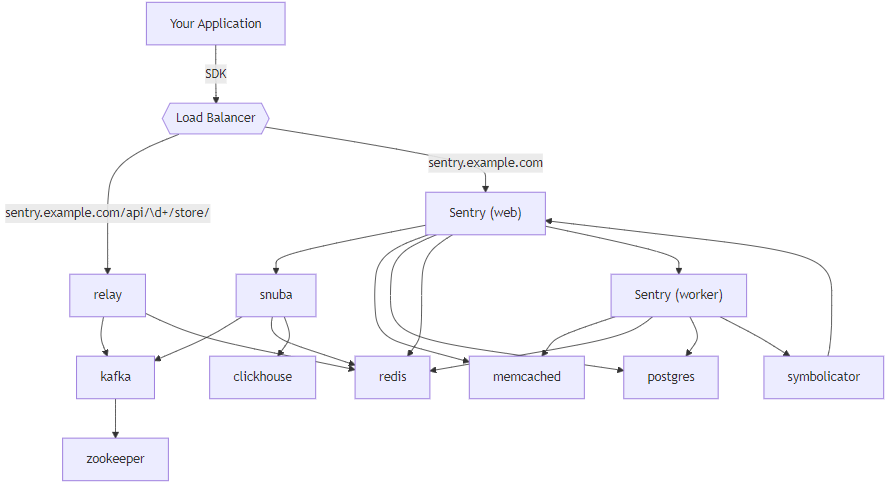

实时错误监控-Sentry
- TAGS: Linux
简介
sentry就扮演着一个错误收集的角色，将你的项目和sentry结合起来，无论谁在 项目使用中报错，sentry都会第一次时间通知开发者，出现了什么错误，错误出 现在哪，帮你记录错误，便于你解决问题，这就是sentry。
什么是DSN
DSN是连接客户端(项目)与sentry服务端,让两者能够通信的钥匙；每当我们在 sentry服务端创建一个新的项目，都会得到一个独一无二的DSN，也就是密钥。 在客户端初始化时会用到这个密钥，这样客户端报错，服务端就能抓到你对应 项目的错误了。
架构：https://develop.sentry.dev/application/architecture/

安装
https://github.com/sentry-kubernetes/charts/blob/develop/charts/sentry/README.md
helm pull sentry/sentry
tar xf sentry-25.10.0.tgz
cd sentry
创建sentry名称空间及自定义账号：
kubectl create ns sentry cat <<\EOF> sentry-custom-account.yaml apiVersion: v1 kind: Secret metadata: name: sentry-custom-account namespace: sentry type: Opaque stringData: admin-password: 74mJ4Z0xxx s3-access-key-id: AKIAU6xxx s3-secret-access-key: Cr4BHYkxxx mail-password: nAKTIxxx EOF kubectl apply -f sentry-custom-account.yaml
value.yaml 修改
#管理员用户
user:
create: true
email: this@gmail.com
#password: aa
## set this value to an existingSecret name to create the admin user with the password in the secret
existingSecret: sentry-admin-password
asHook: true #首次安装为true来初始化，之后更新时改为false
#sentry-worker和sentry-web之间共享数据，使用云对象存存储s3或者efs文件存储。这里使用s3存储
#如果使用文件系统是RWO访问模式， 就把web服务的strategyType: RollingUpdate 改为的strategyType: Recreate
filestore:
backend: s3
s3:
existingSecret: sentry-custom-account
bucketName: sentry-filestore-data
# endpointUrl:
# signature_version:
region_name: af-south-1
# default_acl:
#將 activeDeadlineSeconds 設定為 1000 以免 pods 還未完成工作就被以為是Error 直接將整個安裝中斷掉。
hooks:
activeDeadlineSeconds: 1000
#邮箱
mail:
backend: smtp
useTls: true
useSsl: false
username: this@gmail.com
#password: ""
existingSecret: sentry-custom-account
existingSecretKey: mail-password
port: 587
host: smtp.gmail.com
from: this@gmail.com
#注意，如果使用gmail邮箱，需要开启双重认证后，找到应用专用密码，创建16位密码
symbolicator:
enabled: true
#URL, DSN 客户端回调地址
system:
url: "https://kubesentry.<your-domain>"
#域名
ingress:
enabled: true
regexPathStyle: nginx
ingressClassName: nginx-prod
alb:
httpRedirect: false
hostname: kubesentry.cici.com
#目前镜像不支持arm架构，创建amd节点组，nodeSelecor指定node
nodeSelector: {type: adm-ops}
#vim :%s@nodeSelector:.*@nodeSelector: {type: adm-ops}@g
amd镜像服务： clickhouse\cleanup
sentry:
cleanup:
nodeSelector: {type: adm-ops}
clickhouse:
enabled: true
clickhouse:
nodeSelector: {type: adm-ops}
kafka:
enabled: true
provisioning:
enabled: true
nodeSelector: {type: adm-ops}
安装
helm install sentry sentry/sentry -n sentry -f ./values-new.yaml --dry-run helm upgrade --install sentry sentry/sentry -n sentry -f ./values-new.yaml --debug --wait
初始化数据库\创建用户
kubectl exec -it -n sentry $(kubectl get pods -n sentry |grep sentry-web |awk '{print $1}') bash
sentry upgrade
sentry createuser --force-update
重启服务
for s in `kubectl -n sentry get deploy |sed '1d'|awk '{print $1}'`; do echo $s; kubectl -n sentry rollout restart deploy $s ;done
卸载
helm uninstall sentry -n sentry kubectl delete pods -n sentry --all kubectl delete job -n sentry --all # 删除 pvc kubectl delete pvc --all -n sentry
使用
- 创建团队： setting–>team
- 增加成员：
- 创建项目：new project
- 项目告警：Alert
参考：